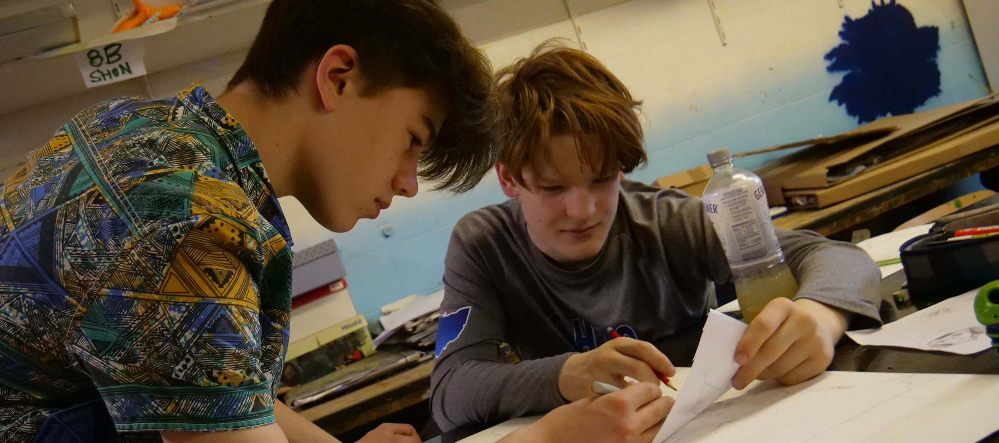

Wir möchten unsere Schüler:innen dabei unterstützen, ihre bestmögliche Leistung zu erreichen und ihre Fähigkeiten individuell weiterzuentwickeln.
Dabei begleiten wir unsere Schüler:innen auf fachlicher, sozialer und persönlicher Ebene während ihrer gesamten Schullaufbahn.
Für die gesamte Sekundarstufe I stehen vier Ergänzungsstunden zur individuellen Förderung zur Verfügung.
Der Leistungsstand der Schüler:innen wird regelmäßig betrachtet. Bei Bedarf werden gezielte Fördermaßnahmen eingeleitet.
In den Jahrgangsstufen 8 bis 10 unterstützen Lernstudios Schüler:innen mit größeren Schwierigkeiten in mehreren Fächern.
Zusätzlich bietet das Lerncoaching Hilfe bei:
Auch individuelle Begabungen möchten wir gezielt fördern.
Die individuelle Förderung arbeitet eng mit unseren Konzepten zur Sozialkompetenz und Berufsorientierung zusammen.
Bei Fragen zur individuellen Förderung wenden Sie sich gerne an:
📧 Herr Thomas (THOM@ncg-online.de)
| Jahrgang | Förderung fachlicher Kompetenzen | Förderung sozialer Kompetenzen | Studien- & Berufsorientierung |
|---|---|---|---|
| Jgst 5 |
1. Halbjahr: Methodisches und soziales Lernen durch die Klassenleitung, Potenzialanalyse Deutsch 2. Halbjahr: Sprachförderung Deutsch für Schüler:innen mit entsprechenden Schwächen |
Piratentag (Gemeinschaft & Klassenregeln) | — |
| Jgst 6–7 |
|
— | — |
| Jgst 8 |
|
|
|
| Jgst 9 | — |
|
Schullaufbahnberatung |
| Jgst 10 | — |
|
Parallel zu den Sportkompaktkursen |
| EF |
|
— |
|
| Q1 | — | Tage religiöser und philosophischer Orientierung |
|
[1] Aus Sicht der Präventionsbeauftragten ist der Projekttag zur Suchtprävention sinnvoller schon deutlich früher anzusiedeln, etwa in Klasse 7 oder Klasse 8. Eine Verlegung dieses Projekttages bedarf aber, da es sich um eine Überarbeitung des Konzeptes zum Außerschulischen Lernen handelt, eines Beschlusses der Schulkonferenz, der erst im kommenden Schuljahr erwirkt werden kann. Alternativ könnte neben den zwei Projekttage zur Prävention vor Rassismus und Antisemitismus je ein Tag zur Förderung in den Kernfächern M, D und E angesetzt werden.